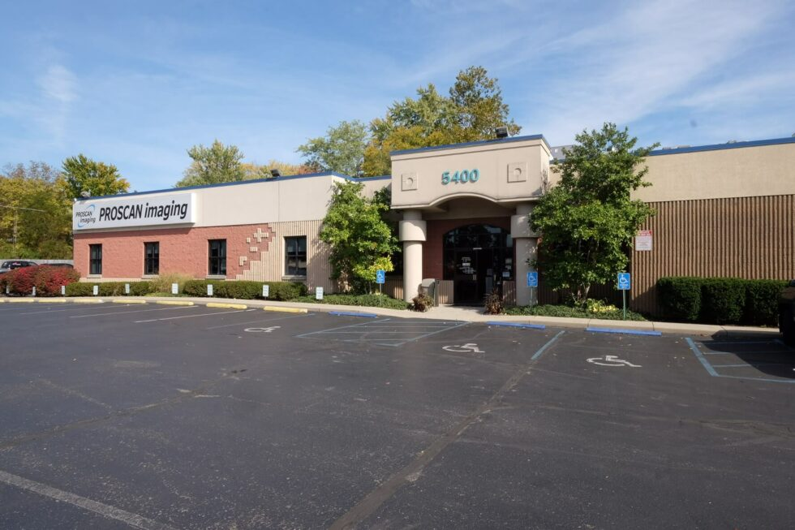
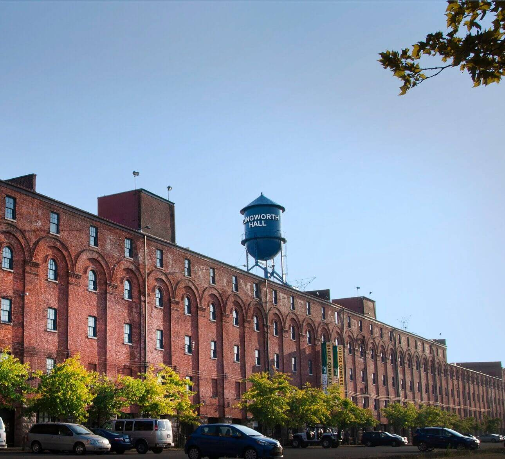
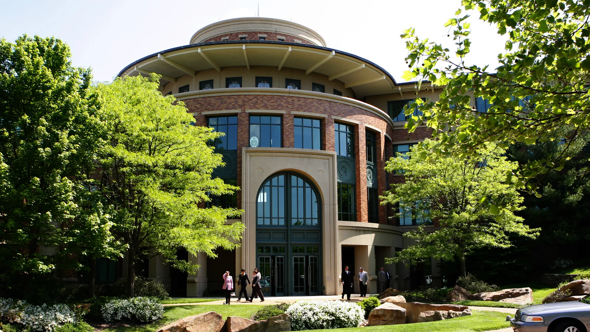

Job History
ProScan Imaging

Data Entry Specialist - Fulltime
May 2023 - Current
Responsibilities
- Securely handled client and patient data and payment details
- Organized correspondence to secure information relating to patient insurance
- Conveyed attention to detail and proficiency in utilizing ERP software.
Blueboard Inc.

Experience Researcher - Fulltime
November 2022 - May 2023
Responsibilities
- Provided customers with best deals and well-researched travel options.
- Maintained operational proficiency in coordinating both international and domestic travel accommodations for customers, arranging for airfare as well as hotel and rental car reservations.
- Collaborated with colleagues to implement best practices across department and exceed team goals.
- Organized memorable and exquisite travel itineraries and vacations for high-level clients and business executives.
Fidelity Investments

Financial Services Representative - Fulltime
July 2022 - November 2022
Responsibilities
- Engaged with participants with an empathetic, informative manner.
- Practiced active listening and clarifying questioning in order to narrow down a participant's underlying needs.
- Educated and explained the details within client plans and broke down options available to participants regarding their 401k finances.
- De-escalated calls which were emotionally charged and maintained a professional, understanding demeanor when conversations couldn't be immediately refocused.
Education
About Me